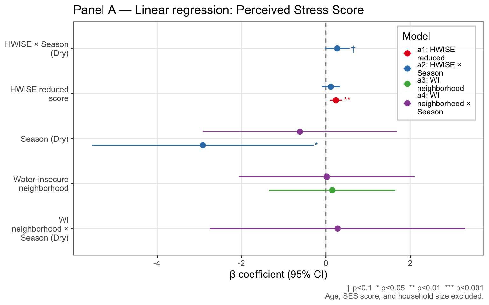
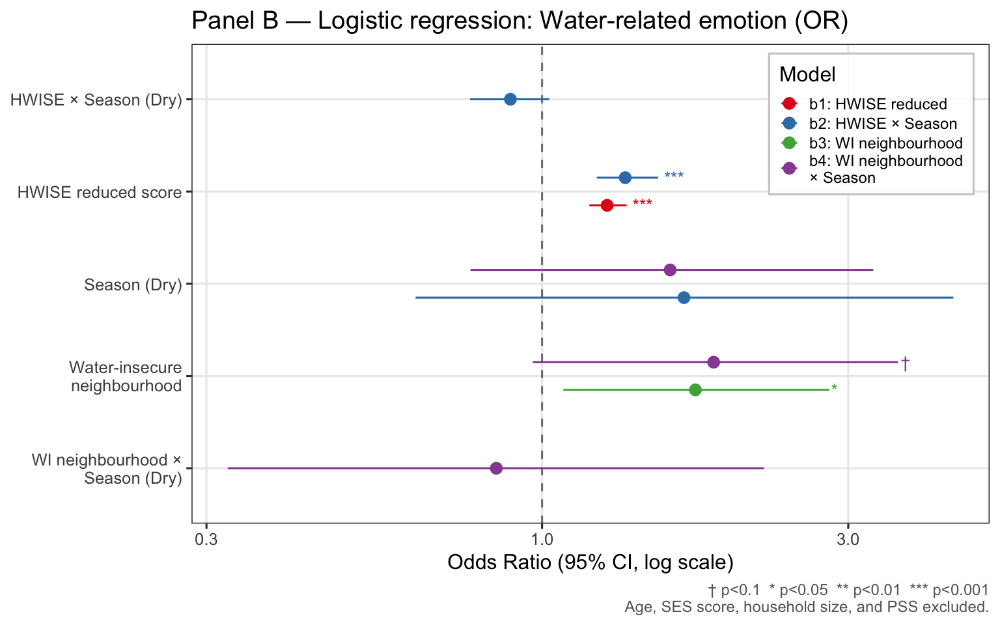
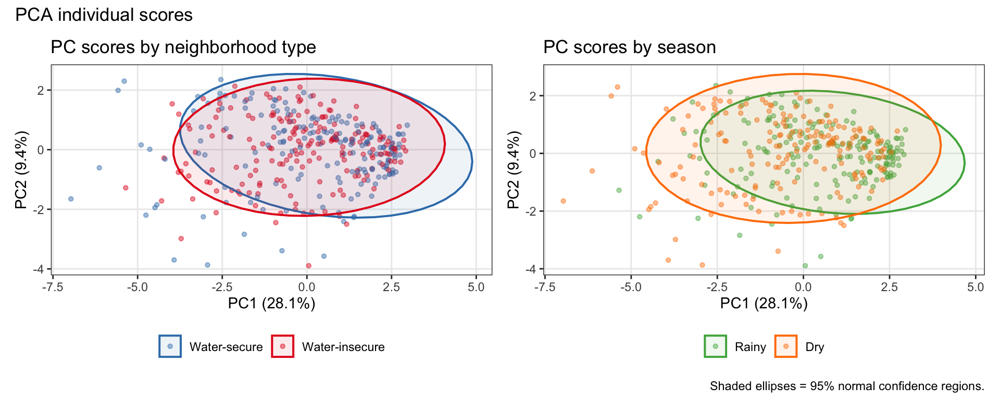
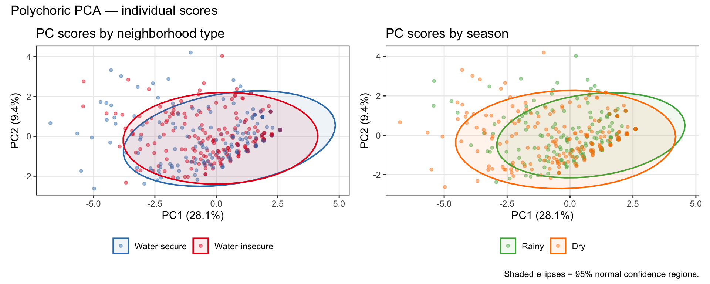
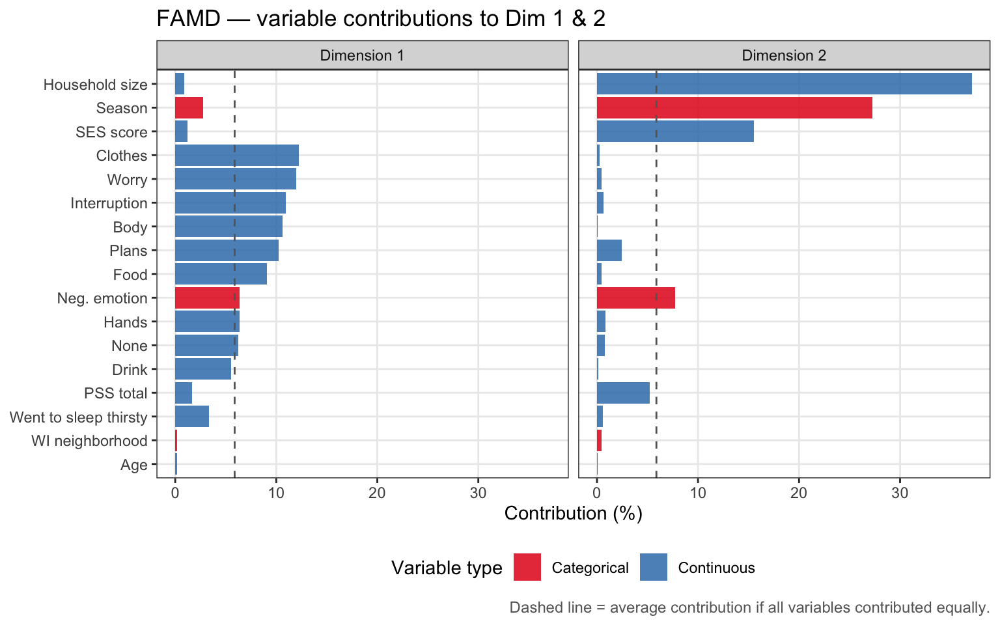
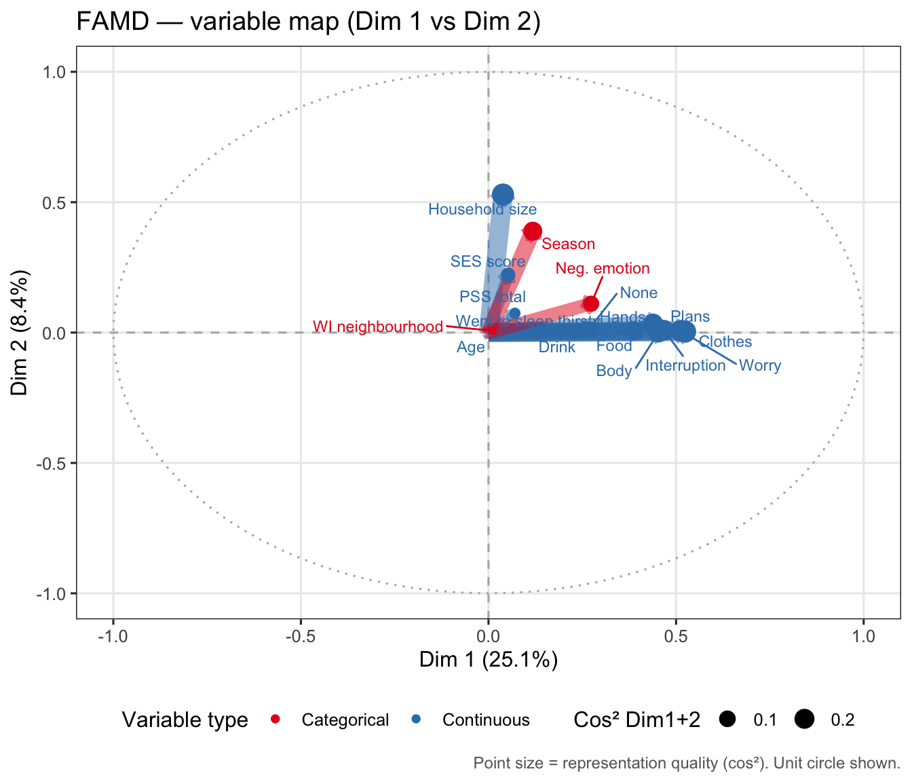
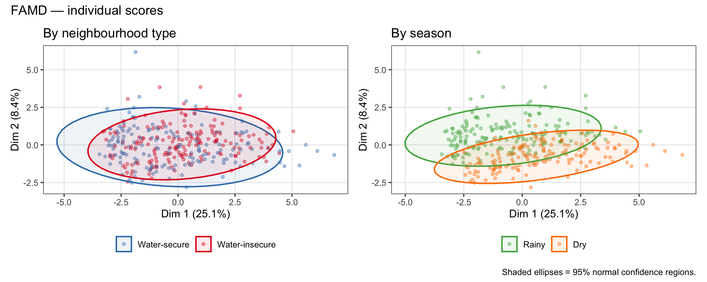
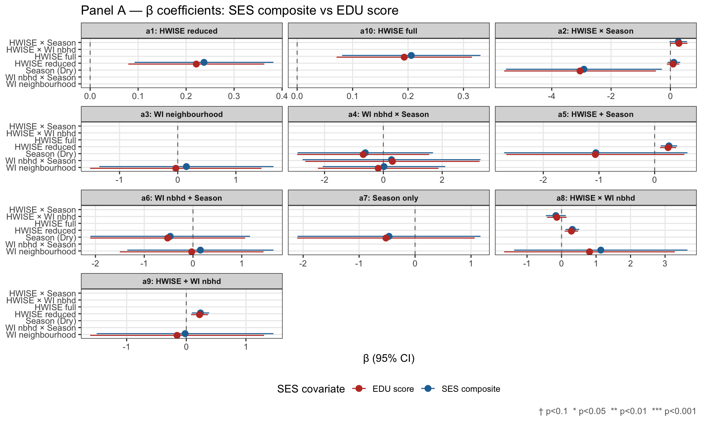

Last updated: 2026-03-29
Checks: 6 1
Knit directory: QUAIL-Mex/
This reproducible R Markdown analysis was created with workflowr (version 1.7.1). The Checks tab describes the reproducibility checks that were applied when the results were created. The Past versions tab lists the development history.
The R Markdown file has unstaged changes. To know which version of
the R Markdown file created these results, you’ll want to first commit
it to the Git repo. If you’re still working on the analysis, you can
ignore this warning. When you’re finished, you can run
wflow_publish to commit the R Markdown file and build the
HTML.
Great job! The global environment was empty. Objects defined in the global environment can affect the analysis in your R Markdown file in unknown ways. For reproduciblity it’s best to always run the code in an empty environment.
The command set.seed(20241009) was run prior to running
the code in the R Markdown file. Setting a seed ensures that any results
that rely on randomness, e.g. subsampling or permutations, are
reproducible.
Great job! Recording the operating system, R version, and package versions is critical for reproducibility.
Nice! There were no cached chunks for this analysis, so you can be confident that you successfully produced the results during this run.
Great job! Using relative paths to the files within your workflowr project makes it easier to run your code on other machines.
Great! You are using Git for version control. Tracking code development and connecting the code version to the results is critical for reproducibility.
The results in this page were generated with repository version ce0e054. See the Past versions tab to see a history of the changes made to the R Markdown and HTML files.
Note that you need to be careful to ensure that all relevant files for
the analysis have been committed to Git prior to generating the results
(you can use wflow_publish or
wflow_git_commit). workflowr only checks the R Markdown
file, but you know if there are other scripts or data files that it
depends on. Below is the status of the Git repository when the results
were generated:
Ignored files:
Ignored: .DS_Store
Ignored: .RData
Ignored: .Rhistory
Ignored: .Rproj.user/
Ignored: .claude/settings.local.json
Ignored: .claude/worktrees/
Ignored: analysis/.DS_Store
Ignored: analysis/.RData
Ignored: analysis/.Rhistory
Ignored: analysis/Hrs_by_HWISE score.png
Ignored: analysis/figure/
Ignored: analysis/site_libs/
Ignored: analysis/stacked_barplot.png
Ignored: code/.DS_Store
Ignored: data/.DS_Store
Ignored: figure/.DS_Store
Ignored: output/.DS_Store
Ignored: output/figures/.DS_Store
Ignored: output/tables/.DS_Store
Untracked files:
Untracked: output/figures/06z.Unadj_OR_EMO_sparklines.png
Unstaged changes:
Modified: analysis/06.unadjusted_models.Rmd
Modified: analysis/06z.forest_sparklines_proto.Rmd
Modified: analysis/07.aim1_models.Rmd
Modified: analysis/08.aim2_models.Rmd
Modified: analysis/09.aim2_adjusted_for_hwise.Rmd
Modified: output/figures/06.Unadj_coef_EMO.png
Modified: output/figures/06.Unadj_coef_PSS.png
Modified: output/figures/06z.Unadj_coef_PSS_sparklines.png
Deleted: output/figures/07.UV_coef_EMO.png
Deleted: output/figures/07.UV_coef_PSS.png
Deleted: output/figures/07z.forest_sparklines_proto.png
Modified: output/figures/09.aim2_adjusted_for_hwise_emo_forest.png
Modified: output/figures/09.aim2_adjusted_for_hwise_pss_forest.png
Modified: output/tables/06.Tables_Unadjusted_Models.docx
Modified: output/tables/07.Tables_Aim1_Models.docx
Modified: output/tables/07.aim1_models_core_wide.docx
Modified: output/tables/08.Tables_Aim2_Models.docx
Modified: output/tables/09.Tables_Aim2_HWISEadj_Models.docx
Note that any generated files, e.g. HTML, png, CSS, etc., are not included in this status report because it is ok for generated content to have uncommitted changes.
These are the previous versions of the repository in which changes were
made to the R Markdown (analysis/07.aim1_models.Rmd) and
HTML (docs/07.aim1_models.html) files. If you’ve configured
a remote Git repository (see ?wflow_git_remote), click on
the hyperlinks in the table below to view the files as they were in that
past version.
| File | Version | Author | Date | Message |
|---|---|---|---|---|
| Rmd | ce0e054 | Paloma | 2026-03-27 | homogenize formatting tables |
| html | ce0e054 | Paloma | 2026-03-27 | homogenize formatting tables |
| Rmd | aa3216c | Paloma | 2026-03-26 | updated forest plots, updated intros |
| html | aa3216c | Paloma | 2026-03-26 | updated forest plots, updated intros |
| Rmd | 3ad7716 | Paloma | 2026-03-23 | updated |
| html | 3ad7716 | Paloma | 2026-03-23 | updated |
This script recalculates the HWISE reduced score (excluding the angry and shame items) and fits nine regression models per outcome testing the association between water insecurity, neighborhood water security status, and season. Results are consolidated into publication-ready tables.
| Panel | Outcome | Model type | Models |
|---|---|---|---|
| A | Perceived Stress Score (PSS, 0–56) | Linear regression | m_a1 – m_a9 |
| B | Water-related emotion (positive / negative) | Logistic regression | m_b1 – m_b9 |
Covariates in all models: Age (D_AGE),
SES composite score (SES_SC_Total),
Household size (D_HH_SIZE),
Chronic disease (CHRONIC_DIS). Panel B
additionally adjusts for PSS
(PSS_TOTAL).
Focal predictors and model structure:
| Model | Focal predictor(s) | Structure |
|---|---|---|
| m_a1 / m_b1 | HWISE reduced score | Main effect |
| m_a2 / m_b2 | HWISE reduced score + Season | HWISE × Season interaction |
| m_a3 / m_b3 | Neighborhood water insecurity | Main effect |
| m_a4 / m_b4 | Neighborhood water insecurity + Season | Neighborhood × Season interaction |
| m_a5 / m_b5 | HWISE reduced score + Season | Additive (no interaction) |
| m_a6 / m_b6 | Neighborhood water insecurity + Season | Additive (no interaction) |
| m_a7 / m_b7 | Season | Season only |
| m_a8 / m_b8 | HWISE reduced score + Neighborhood WI | HWISE × Neighborhood interaction |
| m_a9 / m_b9 | HWISE reduced score + Neighborhood WI | Additive (no interaction) |
Dataset: 397 rows × 151 colsThe HWISE reduced score sums the 10 items that
remain after removing the emotion-laden items HW_ANGRY and
HW_SHAME. A participant’s reduced score is set to
NA if any of the 10 contributing items is missing.
HWISE_REDUCED — summary: Min. 1st Qu. Median Mean 3rd Qu. Max.
0.000 3.000 6.000 7.151 11.000 24.000
N with valid HWISE_REDUCED: 397 N with valid HWISE_FULL: 397
WI_NEIGHBORHOOD distribution:
Water-secure Water-insecure <NA>
196 201 0
SEASON distribution:
Rainy Dry <NA>
201 196 0
EMO_NEG distribution:
0 1 <NA>
125 238 34 # A tibble: 19 × 2
model n
<chr> <int>
1 m_a1 368
2 m_a2 368
3 m_a3 368
4 m_a4 368
5 m_a5 368
6 m_a6 368
7 m_a7 368
8 m_a8 368
9 m_a9 368
10 m_a10 368
11 m_b1 334
12 m_b2 334
13 m_b3 334
14 m_b4 334
15 m_b5 334
16 m_b6 334
17 m_b7 334
18 m_b8 334
19 m_b9 334
Saved: ./output/figures/07.aim1_panel_a_coef_plot.pngOne row per predictor per model. Season adjusted.
Model | Variable | Beta | 95% CI | p-value |
|---|---|---|---|---|
HWISE reduced | HWISE reduced score | 0.26 | [0.11, 0.40] | 0.001 *** |
Season (Dry) | -1.06 | [-2.70, 0.59] | 0.208 | |
Age | -0.11 | [-0.21, -0.01] | 0.031 * | |
SES score | -0.00 | [-0.02, 0.01] | 0.717 | |
Household size | 0.02 | [-0.21, 0.25] | 0.850 | |
Chronic disease | 3.36 | [1.33, 5.39] | 0.001 ** | |
HWISE score | HWISE score | 0.22 | [0.09, 0.35] | 0.001 *** |
Season (Dry) | -1.00 | [-2.64, 0.64] | 0.232 | |
Age | -0.11 | [-0.21, -0.01] | 0.032 * | |
SES score | -0.00 | [-0.02, 0.01] | 0.707 | |
Household size | 0.02 | [-0.21, 0.25] | 0.852 | |
Chronic disease | 3.37 | [1.34, 5.40] | 0.001 ** | |
WI neighborhood | Water-insecure neighborhood | 0.15 | [-1.35, 1.65] | 0.842 |
Season (Dry) | -0.47 | [-2.10, 1.17] | 0.575 | |
Age | -0.12 | [-0.23, -0.02] | 0.022 * | |
SES score | -0.01 | [-0.02, 0.01] | 0.431 | |
Household size | 0.02 | [-0.21, 0.25] | 0.882 | |
Chronic disease | 3.43 | [1.36, 5.50] | 0.001 ** | |
† p<0.1 * p<0.05 ** p<0.01 *** p<0.001 | ||||

Saved: ./output/figures/07.aim1_panel_b_coef_plot.pngOne row per predictor per model. Season adjusted.
Model | Variable | OR | 95% CI | p-value |
|---|---|---|---|---|
HWISE reduced | HWISE reduced score | 1.27 | [1.19, 1.36] | 0.000 *** |
Season (Dry) | 0.90 | [0.50, 1.63] | 0.727 | |
PSS total | 1.07 | [1.03, 1.11] | 0.001 *** | |
Age | 1.03 | [1.00, 1.08] | 0.076 † | |
SES score | 1.00 | [0.99, 1.01] | 0.736 | |
Household size | 1.02 | [0.95, 1.10] | 0.604 | |
Chronic disease | 0.57 | [0.27, 1.19] | 0.132 | |
HWISE score | HWISE_FULL | 1.24 | [1.17, 1.32] | 0.000 *** |
Season (Dry) | 0.91 | [0.50, 1.65] | 0.760 | |
PSS total | 1.07 | [1.03, 1.11] | 0.001 *** | |
Age | 1.04 | [1.00, 1.08] | 0.069 † | |
SES score | 1.00 | [0.99, 1.01] | 0.843 | |
Household size | 1.02 | [0.95, 1.10] | 0.606 | |
Chronic disease | 0.56 | [0.27, 1.19] | 0.134 | |
WI neighborhood | Water-insecure neighborhood | 1.72 | [1.07, 2.78] | 0.027 * |
Season (Dry) | 1.46 | [0.86, 2.48] | 0.163 | |
PSS total | 1.09 | [1.05, 1.13] | 0.000 *** | |
Age | 1.03 | [1.00, 1.07] | 0.076 † | |
SES score | 1.00 | [0.99, 1.00] | 0.444 | |
Household size | 1.02 | [0.95, 1.10] | 0.576 | |
Chronic disease | 0.58 | [0.30, 1.14] | 0.108 | |
† p<0.1 * p<0.05 ** p<0.01 *** p<0.001 | ||||
Panel | Model | Predictors | N | R² | Adj. R² | AIC | BIC | ΔAIC |
|---|---|---|---|---|---|---|---|---|
A — Perceived Stress Score (linear) | m_a2 | HWISE × Season | 368 | 0.077 | 0.059 | 2,500.0 | 2,535.1 | 0.0 |
m_a10 | HWISE score | 368 | 0.065 | 0.052 | 2,500.7 | 2,528.0 | 0.7 | |
m_a1 | HWISE reduced | 368 | 0.064 | 0.051 | 2,500.8 | 2,528.2 | 0.8 | |
m_a5 | HWISE + Season | 368 | 0.068 | 0.053 | 2,501.2 | 2,532.4 | 1.2 | |
m_a9 | HWISE + WI neighborhood | 368 | 0.064 | 0.049 | 2,502.8 | 2,534.1 | 2.8 | |
m_a8 | HWISE × WI neighborhood | 368 | 0.068 | 0.049 | 2,503.5 | 2,538.7 | 3.5 | |
m_a7 | Season only | 368 | 0.038 | 0.025 | 2,510.9 | 2,538.3 | 10.9 | |
m_a3 | WI neighborhood | 368 | 0.038 | 0.024 | 2,511.2 | 2,538.5 | 11.2 | |
m_a6 | WI neighborhood + Season | 368 | 0.038 | 0.022 | 2,512.9 | 2,544.1 | 12.9 | |
m_a4 | WI neighborhood × Season | 368 | 0.038 | 0.020 | 2,514.8 | 2,550.0 | 14.8 |
Panel | Model | Predictors | N | McFadden R² | AIC | BIC | ΔAIC |
|---|---|---|---|---|---|---|---|
B — Water-related emotion (logistic) | m_b10 | HWISE score | 334 | 0.218 | 351.1 | 377.8 | 0.0 |
m_b8 | HWISE × WI neighborhood | 334 | 0.220 | 354.6 | 388.9 | 3.5 | |
m_b9 | HWISE + WI neighborhood | 334 | 0.214 | 355.0 | 385.5 | 3.9 | |
m_b1 | HWISE reduced | 334 | 0.208 | 355.5 | 382.1 | 4.4 | |
m_b2 | HWISE × Season | 334 | 0.215 | 356.8 | 391.1 | 5.7 | |
m_b5 | HWISE + Season | 334 | 0.209 | 357.3 | 387.8 | 6.2 | |
m_b3 | WI neighborhood | 334 | 0.071 | 414.6 | 441.3 | 63.5 | |
m_b6 | WI neighborhood + Season | 334 | 0.076 | 414.6 | 445.1 | 63.5 | |
m_b4 | WI neighborhood × Season | 334 | 0.076 | 416.5 | 450.8 | 65.4 | |
m_b7 | Season only | 334 | 0.064 | 417.6 | 444.3 | 66.5 |
Interaction models (m_a2, m_a4, m_b2, m_b4) are complemented by season- stratified re-runs to facilitate interpretation.
Season | Predictor | n | β [95% CI] | p-value |
|---|---|---|---|---|
Dry | hwise | 3.65769431 | 0.39 [0.18, 0.61] | <0.001 |
wi_nbh | 0.16201084 | 0.19 [-2.17, 2.56] | 0.871 | |
Rainy | hwise | 0.99662373 | 0.11 [-0.10, 0.32] | 0.320 |
wi_nbh | -0.05478306 | -0.06 [-2.04, 1.93] | 0.956 | |
Covariates: Age, SES score, household size, chronic disease. | ||||
Season | Predictor | OR [95% CI] | p-value |
|---|---|---|---|
Dry | hwise | 1.21 [1.11, 1.33] | <0.001 |
wi_nbh | 1.59 [0.77, 3.33] | 0.213 | |
Rainy | hwise | 1.35 [1.22, 1.52] | <0.001 |
wi_nbh | 1.85 [0.97, 3.57] | 0.064 | |
Covariates: PSS, Age, SES score, household size, chronic disease. | |||
The compact regression tables are exported as Word documents with publication-ready formatting.
Saved: ./output/tables/07.aim1_models_core_wide.docxPCA is run on the 10 individual HWISE-reduced items plus the continuous covariates (PSS, Age, SES, Household size). All variables are standardised (mean = 0, SD = 1) before decomposition. Cases with any missing value across these variables are listwise-deleted.
PC1: 28.1% PC2: 9.4% PC3: 9.1%
Standard PCA assumes continuous, normally distributed variables. The HWISE items are ordinal (0–3 Likert scale), so PCA on the polychoric correlation matrix is more appropriate. Polychoric correlations estimate the latent Pearson correlation between pairs of assumed-continuous underlying variables that are observed as ordered categories.
PCA here is restricted to the 10 HWISE-reduced items
— the natural domain for this approach — using
psych::polychoric() followed by an eigendecomposition of
the resulting correlation matrix.
N complete cases for polychoric PCA: 397
Polychoric correlation matrix computed.
Factor Analysis of Mixed Data (FAMD) handles
continuous and categorical variables simultaneously. Continuous
variables are standardised; categorical variables are dummy-coded and
weighted so both types contribute equally to the decomposition
(FactoMineR::FAMD).
Variables included:
| Type | Variables |
|---|---|
| Continuous | 10 HWISE-reduced items, PSS total, Age, SES score, Household size |
| Categorical | WI neighborhood, Season, Water-related emotion (EMO_NEG) |
N complete cases for FAMD: 334 Variables: 17 


Comparison of primary-predictor estimates across all models when
using composite SES score (SES_SC_Total,
main analysis) vs ordinal education score
(SES_EDU_SC_CLEAN, sensitivity) as the SES covariate.
Values shown as β [95% CI]. Significance: † p<0.1, * p<0.05, ** p<0.01, *** p<0.001.
Model | Predictor | SES composite (β [95% CI]) | EDU score (β [95% CI]) |
|---|---|---|---|
a10: HWISE score | HWISE score | 0.206 [0.081, 0.331]** | 0.193 [0.071, 0.315]** |
a1: HWISE reduced | HWISE reduced | 0.237 [0.093, 0.382]** | 0.221 [0.079, 0.363]** |
a2: HWISE × Season | HWISE reduced | 0.116 [-0.099, 0.330] | 0.089 [-0.121, 0.300] |
HWISE × Season | 0.267 [-0.028, 0.562]† | 0.287 [-0.003, 0.576]† | |
Season (Dry) | -2.916 [-5.544, -0.288]* | -3.046 [-5.604, -0.489]* | |
a3: WI neighborhood | WI neighborhood | 0.149 [-1.349, 1.646] | -0.033 [-1.505, 1.439] |
a4: WI nbhd × Season | Season (Dry) | -0.615 [-2.918, 1.689] | -0.685 [-2.932, 1.562] |
WI nbhd × Season | 0.277 [-2.750, 3.303] | 0.308 [-2.656, 3.272] | |
WI neighborhood | 0.020 [-2.063, 2.103] | -0.175 [-2.227, 1.876] | |
a5: HWISE + Season | HWISE reduced | 0.257 [0.109, 0.405]*** | 0.241 [0.096, 0.386]** |
Season (Dry) | -1.057 [-2.703, 0.590] | -1.066 [-2.665, 0.534] | |
a6: WI nbhd + Season | Season (Dry) | -0.467 [-2.104, 1.170] | -0.520 [-2.109, 1.068] |
WI neighborhood | 0.152 [-1.346, 1.651] | -0.027 [-1.500, 1.447] | |
a7: Season only | Season (Dry) | -0.465 [-2.100, 1.169] | -0.521 [-2.107, 1.066] |
a8: HWISE × WI nbhd | HWISE reduced | 0.314 [0.116, 0.511]** | 0.285 [0.092, 0.479]** |
HWISE × WI nbhd | -0.165 [-0.454, 0.124] | -0.137 [-0.420, 0.147] | |
WI neighborhood | 1.138 [-1.373, 3.650] | 0.811 [-1.663, 3.285] | |
a9: HWISE + WI nbhd | HWISE reduced | 0.237 [0.092, 0.383]** | 0.222 [0.080, 0.364]** |
WI neighborhood | -0.020 [-1.502, 1.462] | -0.155 [-1.612, 1.303] |
Values shown as OR [95% CI]. Significance: † p<0.1, * p<0.05, ** p<0.01, *** p<0.001.
Model | Predictor | SES composite (OR [95% CI]) | EDU score (OR [95% CI]) |
|---|---|---|---|
b1: HWISE reduced | HWISE reduced | 1.263 [1.185, 1.354]*** | 1.271 [1.192, 1.363]*** |
b2: HWISE × Season | HWISE reduced | 1.348 [1.217, 1.516]*** | 1.363 [1.230, 1.535]*** |
HWISE × Season | 0.893 [0.773, 1.026] | 0.885 [0.765, 1.017]† | |
Season (Dry) | 1.664 [0.635, 4.374] | 1.732 [0.673, 4.485] | |
b3: WI neighborhood | WI neighborhood | 1.734 [1.079, 2.802]* | 1.683 [1.052, 2.707]* |
b4: WI nbhd × Season | Season (Dry) | 1.583 [0.773, 3.282] | 1.657 [0.816, 3.410] |
WI nbhd × Season | 0.849 [0.324, 2.218] | 0.774 [0.297, 2.008] | |
WI neighborhood | 1.851 [0.967, 3.586]† | 1.882 [0.985, 3.643]† | |
b5: HWISE + Season | HWISE reduced | 1.267 [1.186, 1.361]*** | 1.274 [1.193, 1.370]*** |
Season (Dry) | 0.900 [0.495, 1.628] | 0.902 [0.502, 1.615] | |
b6: WI nbhd + Season | Season (Dry) | 1.456 [0.861, 2.481] | 1.453 [0.868, 2.448] |
WI neighborhood | 1.715 [1.067, 2.776]* | 1.669 [1.042, 2.688]* | |
b7: Season only | Season (Dry) | 1.481 [0.881, 2.508] | 1.472 [0.884, 2.469] |
b8: HWISE × WI nbhd | HWISE reduced | 1.201 [1.110, 1.313]*** | 1.212 [1.120, 1.324]*** |
HWISE × WI nbhd | 1.111 [0.972, 1.278] | 1.110 [0.970, 1.277] | |
WI neighborhood | 0.862 [0.346, 2.113] | 0.894 [0.361, 2.187] | |
b9: HWISE + WI nbhd | HWISE reduced | 1.257 [1.179, 1.348]*** | 1.267 [1.188, 1.358]*** |
WI neighborhood | 1.524 [0.901, 2.585] | 1.564 [0.924, 2.657]† |

These tables report adjusted models where each water-related predictor is added one at a time to a core covariate set (age, SES score, household size, chronic disease; PSS total for EMO outcome). Years in neighborhood is also tested as a predictor in its own model. BH correction is applied across all models within each outcome.
Saved: ./output/tables/07.Tables_Aim1_Models.docx
R version 4.5.3 (2026-03-11)
Platform: aarch64-apple-darwin20
Running under: macOS Tahoe 26.3.1
Matrix products: default
BLAS: /Library/Frameworks/R.framework/Versions/4.5-arm64/Resources/lib/libRblas.0.dylib
LAPACK: /Library/Frameworks/R.framework/Versions/4.5-arm64/Resources/lib/libRlapack.dylib; LAPACK version 3.12.1
locale:
[1] C.UTF-8/C.UTF-8/C.UTF-8/C/C.UTF-8/C.UTF-8
time zone: America/Detroit
tzcode source: internal
attached base packages:
[1] stats graphics grDevices utils datasets methods base
other attached packages:
[1] lmtest_0.9-40 zoo_1.8-14 factoextra_2.0.0 FactoMineR_2.13
[5] psych_2.6.1 patchwork_1.3.1 ggrepel_0.9.6 officer_0.7.3
[9] flextable_0.9.11 broom_1.0.12 lubridate_1.9.4 forcats_1.0.0
[13] stringr_1.5.1 dplyr_1.2.0 purrr_1.0.4 readr_2.1.5
[17] tidyr_1.3.1 tibble_3.2.1 ggplot2_4.0.0 tidyverse_2.0.0
loaded via a namespace (and not attached):
[1] mnormt_2.1.2 sandwich_3.1-1 rlang_1.1.7
[4] magrittr_2.0.3 git2r_0.36.2 multcomp_1.4-28
[7] compiler_4.5.3 systemfonts_1.3.2 vctrs_0.7.1
[10] pkgconfig_2.0.3 crayon_1.5.3 fastmap_1.2.0
[13] backports_1.5.0 labeling_0.4.3 utf8_1.2.4
[16] promises_1.3.2 rmarkdown_2.30 tzdb_0.5.0
[19] ragg_1.4.0 bit_4.6.0 xfun_0.52
[22] cachem_1.1.0 jsonlite_2.0.0 flashClust_1.1-4
[25] later_1.4.2 uuid_1.2-1 parallel_4.5.3
[28] cluster_2.1.8.2 R6_2.6.1 bslib_0.9.0
[31] stringi_1.8.7 RColorBrewer_1.1-3 jquerylib_0.1.4
[34] estimability_1.5.1 Rcpp_1.0.14 knitr_1.50
[37] httpuv_1.6.16 Matrix_1.7-4 splines_4.5.3
[40] timechange_0.3.0 tidyselect_1.2.1 yaml_2.3.10
[43] codetools_0.2-20 lattice_0.22-9 withr_3.0.2
[46] S7_0.2.0 askpass_1.2.1 coda_0.19-4.1
[49] evaluate_1.0.3 survival_3.8-6 zip_2.3.3
[52] xml2_1.3.8 pillar_1.10.2 whisker_0.4.1
[55] DT_0.34.0 generics_0.1.3 vroom_1.6.5
[58] rprojroot_2.1.1 hms_1.1.3 scales_1.4.0
[61] xtable_1.8-4 leaps_3.2 glue_1.8.0
[64] gdtools_0.5.0 emmeans_2.0.0 scatterplot3d_0.3-45
[67] tools_4.5.3 data.table_1.17.0 fs_1.6.6
[70] mvtnorm_1.3-3 grid_4.5.3 nlme_3.1-168
[73] cli_3.6.5 textshaping_1.0.0 workflowr_1.7.1
[76] fontBitstreamVera_0.1.1 gtable_0.3.6 sass_0.4.10
[79] digest_0.6.37 fontquiver_0.2.1 TH.data_1.1-3
[82] htmlwidgets_1.6.4 farver_2.1.2 htmltools_0.5.8.1
[85] lifecycle_1.0.5 multcompView_0.1-10 fontLiberation_0.1.0
[88] openssl_2.3.2 bit64_4.6.0-1 MASS_7.3-65